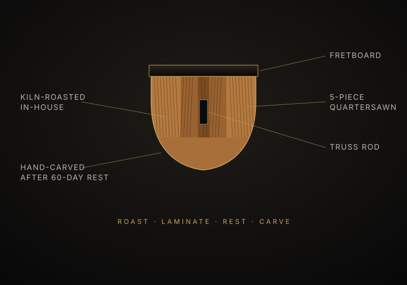
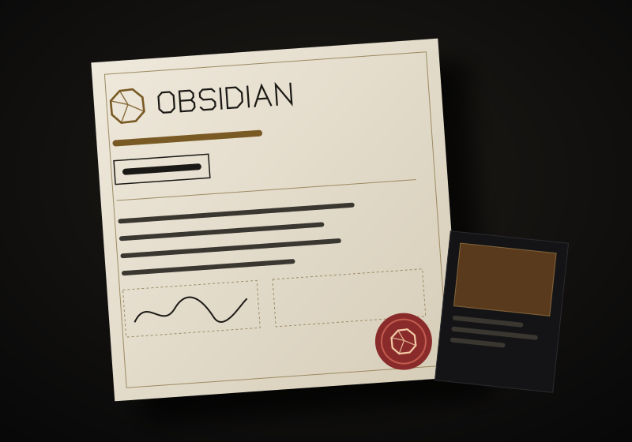

Superstrat
The Tephra
From $4,800
A fast, bright superstrat with a compound-radius board and a sculpted heel. Built for players who live above the twelfth fret.
Obsidian is volcanic glass: lava that cooled too fast to crystallize. We build the other way. One luthier takes each guitar from rough board to final setup, and every neck rests for at least 60 days before anyone carves it.

A great guitar is less about rare wood than about decisions: hundreds of small ones, made by someone who will still answer for them in twenty years.
Every Obsidian is built to order. The shape changes; the neck process, the fretwork, the setup and the paperwork do not.
A fast, bright superstrat with a compound-radius board and a sculpted heel. Built for players who live above the twelfth fret.

A chambered offset with two P-90s and a shard sound port. Airy, touch-sensitive, and lighter than it looks.
A carved-top single-cut with a set neck and real weight behind every note. Dense, warm, and built to sustain.

A headless multiscale in six, seven or eight strings. Balanced on the strap, compact in the case, quiet on stage.

Quench is how we make every neck: maple roasted in our own kiln, laminated from five quartersawn strips, then rested at least 60 days before it is carved by hand.
Roasting drives out moisture and resin. Alternating the grain lets each strip brace its neighbour. The rest gives the wood time to settle before we commit to a carve. The goal is a neck that stays put through a touring season, not just through a photo shoot.
It’s a process we run in our own shop. It isn’t patented and isn’t magic, but we do it on every neck.
How Quench works →Your Obsidian arrives with a Provenance File: a record of what it is, where it came from and who built it. If you ever sell it, the next owner gets the story too.
While it’s being built, you follow along in a private build journal, with photos at every stage from board selection to final setup.

Obsidian’s first 25 guitars are numbered F01 to F25 in any model and any spec. They get a brass serial plate on the neck heel and free setups for life. After F25, the series closes and never reopens.
We build 12 guitars a quarter because that’s what one bench can do properly. Slots open to the waitlist first.
Send a build request and we’ll schedule a spec call. You get a written spec and a fixed quote. A 30% deposit reserves your build slot once you approve your written spec and fixed quote.
Elias Marr spent years on a repair bench fixing expensive guitars: necks that moved with the seasons, frets that lifted, finishes that hid shortcuts. Obsidian is the shop he wanted to send those players to.
Read the story →Deposits, timelines, and where the money goes, line by line.
Balance, tuning, tone and the trade-offs nobody puts in the ad.
What roasting changes, what it doesn’t, and how to spot a good one.
A build request takes five minutes and commits you to nothing. A luthier replies within two business days.
Start a build request